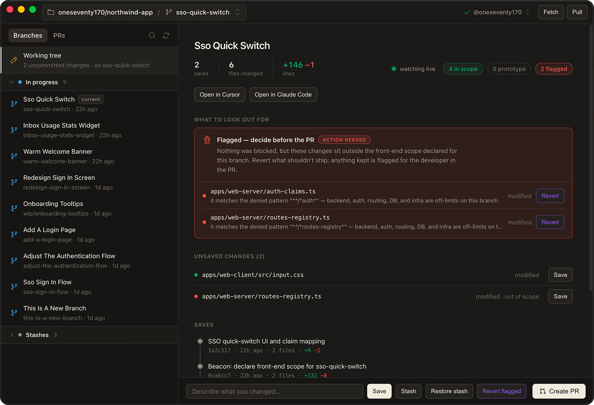

A case study still in private beta and the open source tools I build on the side.
Making customer support effortless & personal
Type your message, save, then send a link as proof.

A Mac app dev tool built to catch AI agents before they touch what's outside the front end.